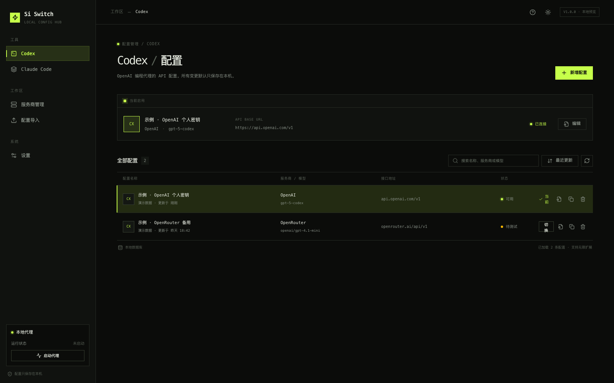

正在读取最新版本
把 Codex 与 Claude Code 的 API 配置留在本地。添加、测试、搜索，然后一键切换。
正在识别你的系统
01
无需登录。选择安装包或便携包，下载后直接使用。
02
没有账号体系、广告或云端同步要求。核心配置默认只保存在你的设备上。
配置与密钥由本机管理，不依赖在线账号。
Codex 与 Claude Code 的当前配置互不影响。
构建、发布与核心逻辑都可以在 GitHub 检查。
已识别你的系统
无法确定系统或芯片？关闭此窗口后可在页面中查看全部平台。